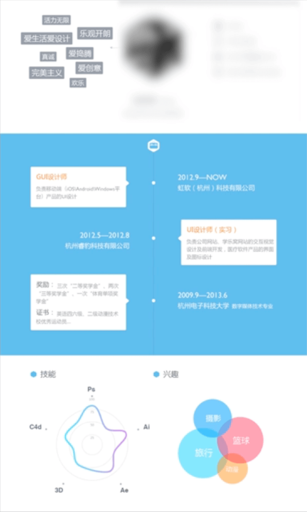
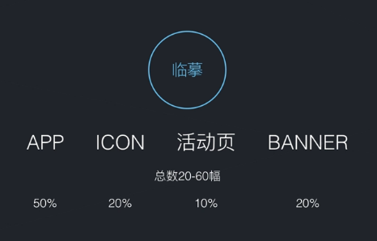

Table of Contents generated with DocToc
准备面试材料
面试材料主要有个人简历、设计作品两大部分。
个人简历
两个重要点：教育背景、工作经历。
如果自己对版式设计掌握得比较好可以设计一下，就像下面的简历一样，设计得好可以加分。


但是如果不熟悉版面设计，那还是老老实实用Word文档就可以了，不然可能还会给人留下不好的印象。
作品
UI设计一般发送简历的时候都会附上个人作品，这时候注意以下细节可以做得更好。
- 按照业务类型把作品按文件夹分类好，比如：banner、ICON、UI、字体等。
- 如果有需要，要把临摹的和自己设计的按文件夹分开存放。
- 作品最好能够表现出自己的各种能力，如：排版能力、配色能力等。
- 作品不求多，但求精华
如何从现在就开始准备作品呢？主要还是从业务范围、技能广度、设计品味、细节把握上来提高，后面两项是需要在实际生活中去提高的，而前面两项则可以从现在做起。
如何开始？
从临摹开始，可以临摹APP/ICON/活动页/BANNER这些类型的图，从而提高自己的业务范围技能。数量最好20-60幅，质量要好。APP/ICON/活动页/BANNER的比例大约在：50%、20%、10%、20%，主要还是以UI为主。

如果有自己的原创作品那就更好了，但是要注意一定只放最好的作品。如果原创的效果太差，那还不如不要。